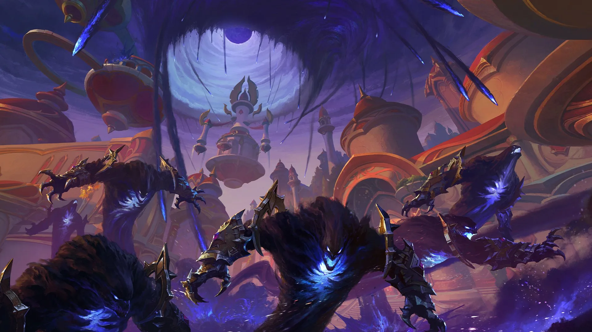

,
15
,
15  ,
40
,
40 
Бездна у ворот Луносвета
Ксал'атат ведёт порождения Бездны на столицу син'дорай. Под угрозой — Солнечный Колодец

Этой ночью Кель'Талас встретил самую страшную угрозу со времён нашествия Плети. Силы Бездны во главе с Ксал'атат прорвались к стенам Луносвета, и бои идут уже на улицах столицы.
Защитники города держатся, но исход битвы пока не ясен. О том, к чему рвутся захватчики и чем ответила Орда, читайте в разделе «Новости королевств».
Читать полностью